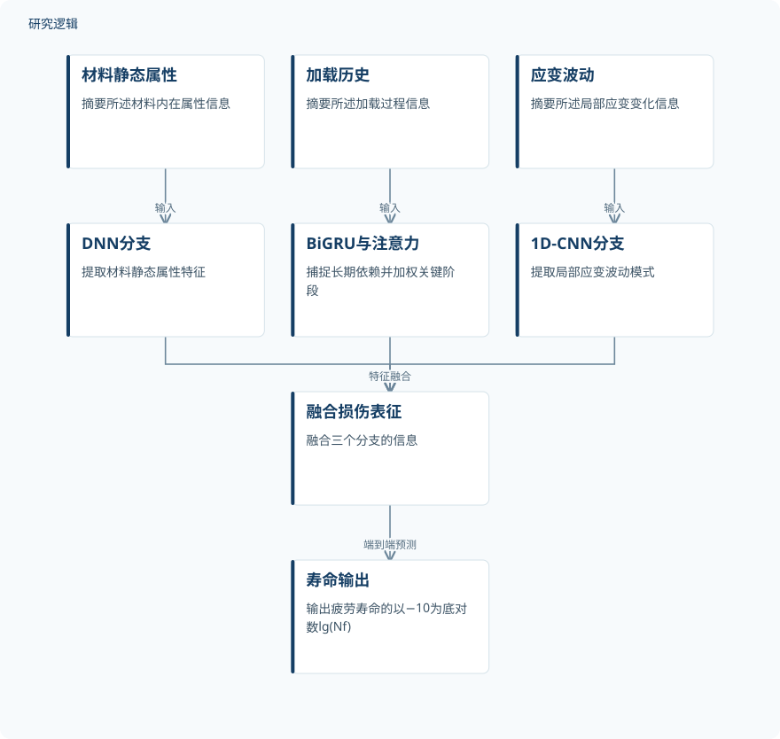

摘要解读
面向金属多轴疲劳寿命预测的异构多模态并行深度学习框架
A Heterogeneous Multi-Modal Parallel Deep Learning Framework for Multiaxial Fatigue Life Prediction of Metals
解读更新 2026-10-18 10:06 · 依据公开摘要整理，未核验全文细节
复杂非比例载荷下，金属多轴疲劳损伤难以可靠预测。本文摘要介绍了一种并行融合材料属性、加载历史与应变波动信息的深度学习框架，并报告了其在公开数据集上的评估结果。
文章目录
非比例载荷下的路径依赖损伤难题
多轴疲劳是金属工程构件可靠设计面临的挑战之一，尤其在复杂非比例加载路径下，损伤演化具有路径依赖性。摘要指出，传统临界面和基于能量的模型较依赖经验假设，捕捉这类演化时面临困难，准确性与泛化能力因此受限。
三路并行提取异质信息
框架由三个并行分支组成：深度神经网络（DNN）提取材料静态内在属性；加入多头自注意力机制的双向门控循环单元（BiGRU）捕捉加载历史中的长期时间依赖，并自适应赋予关键阶段权重；一维卷积神经网络（1D-CNN）提取局部应变波动模式。三路特征融合为损伤表征，用于端到端疲劳寿命预测；模型输出为疲劳寿命的以 −10 为底的对数 lg(Nf)。
依据摘要整理的三分支预测流程


仅呈现摘要明确说明的信息输入、特征提取、融合与输出关系；这是摘要整理的示意图，不是论文原图。
下载 SVG图示关系说明
实线表示相邻阶段的信息流，虚线表示跨阶段联系或反馈。
材料静态属性 → DNN分支：输入；加载历史 → BiGRU与注意力：输入；应变波动 → 1D-CNN分支：输入；DNN分支 → 融合损伤表征：特征融合；BiGRU与注意力 → 融合损伤表征：特征融合；1D-CNN分支 → 融合损伤表征：特征融合；融合损伤表征 → 寿命输出：端到端预测
固定划分表现与消融提示
在包含40种金属、1167个样本的公开多轴疲劳数据集上，摘要报告模型在固定数据划分上的决定系数 R2 = 0.9052。消融研究显示三个特征提取分支具有互补性；摘要还指出，多源融合策略与注意力机制对性能提升起关键作用。
摘要提到的5折交叉验证提示，性能增益仍需在更大的数据集上进一步验证。因而，固定划分上的结果值得关注，但不能单凭摘要将其视为对更广泛材料或载荷情形的充分验证。
摘要未交代的评估边界
摘要没有说明固定划分的具体构成、训练与测试样本如何划分，也未给出不同基线模型、各分支消融结果或5折交叉验证的详细数值。样本与载荷路径覆盖范围、独立外部验证情况及误差分布，也无法仅凭摘要判断；这表示摘要未报告这些细节，不代表论文没有进行相关分析。
阅读启发：关注泛化与物理知识结合
阅读启发：进一步阅读时，可关注交叉验证和消融分析的具体设置与结果，以及模型面对不同材料、加载路径时的适用范围。摘要提出未来可整合物理知识，以增强外推能力与透明度；这些方向的实现方式和实际效果，摘要并未提供，需结合论文后续内容判断。
以上为本站阅读启发与建议，不是论文已验证的结论。